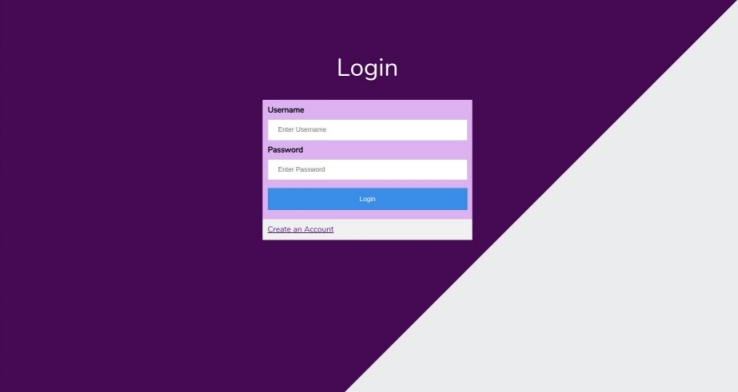
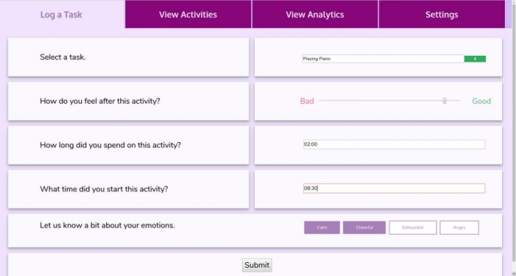
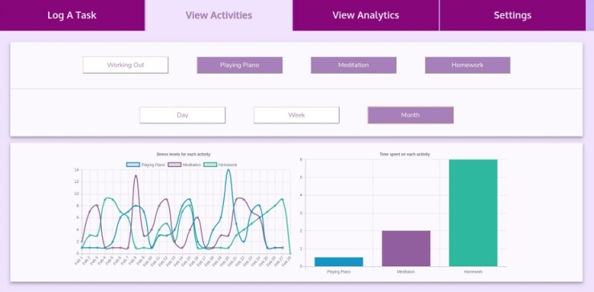
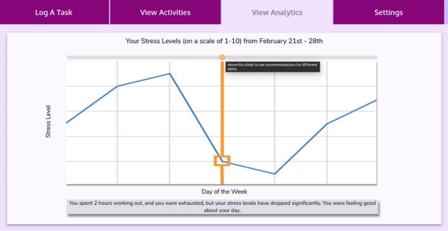

UI/UX Design for a Behavior Tracking Application
Goal
MS in Robotics Final Project Preparatory Work Development of Real-Time Virtual Bimanual Platter Lifting Software Program for Training of Individuals with Stroke Department of Physical Therapy and Human Movement Sciences, Northwestern University Advisors: Netta Gurari, Jules Dewald and Justin Drogos Background There has been extensive research in the field of neurology, with a focus on stroke patients and their rehabilitation. One such study was undertaken by Netta Gurari, Jules Dewald, and Justin Drogos [Task Directionality Impacts the Ability of Individuals with Chronic Hemiparetic Stroke to Match Torques Between Arms]. In a study of ten subjects (6 of them were chronic hemiparetic stroke patients and 4 of them were without neurological impairment). Their primary finding was very interesting: during a torque matching trial, one arm was made to flex about the elbow joint and the other arm was made to match the reference torque. They found that when the patient needed to match the unaffected arm with the affected arm, there was not much of a difference. On the other hand, when the affected arm needed to be matched by the unaffected arm, there was a large torque matching error.
UI/UX Design
The design of the web application follows Don Norman's design principles related to affordances, alignment, visibility, and consistency. There is a consistent theme for all the pages, and we carefully chose font sizes to make sure that the text was easy to read. HTML, CSS, and JavaScript were used to design the webpages from scratch (no Bootstrap framwework!).
Login Page
Log a Task Page
View Activities Page
View Analytics Page
Try out the web application here, and view the GitHub repository for the project here.